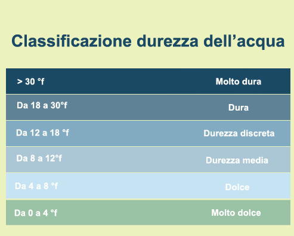

La durezza dell'acqua nella zona di Pieve Modolena (Reggio Emilia) è 38°F; in base alla tabella di classificazione della durezza dell'acqua; l'acqua del rubinetto è classificata come acqua MOLTO DURA
Sito dell'irenTabella di classificazione della durezza:
questo dato è stato ricavato grazie alle sequenti formule:
| Cosa si trova | Formula |
|---|---|
| Durezza totale (in mg/L di CaCO3) | a*1000/c |
| Durezza totale (in F°) | a*0,01*100 |
| a | volume in mL di soluzione di EDTA |
| c | volume in mL dell'acqua in esame |
Nel nostro caso:
Durezza totale=38°F
a=38°F/(0,01*100)=38
Il residuo fisso dell'acqua nella zona di Pieve Modolena (Reggio Emilia) è 473 mg/L; in base alla tabella di classificazione del residuo fisso dell'acqua; l'acqua del rubinetto è classificata come acqua OLIGOMINERALE
Sito dell'irenValori eccessivi di soluti
la presenza di Ca e Mg nei limiti non sono una minaccia ma bensì
Acque dolci
con durezza inferione a 7/5°F a causa di un eccessiva concentrazione di SODIO
Semireazione di ossidazione dell'ammonio in nitriti Batterio NITROSOMONAS:
NH4+ + 3/2 O2 -> 2 H+ + H2O + NO2- + 66,5 kcal/mole
Per la ricerca dell'ammonio si utilizza il reattivo di Nessler, che in ambiente basico, reagendo con l'ammoniaca forma un complesso che fa cambiare il colore della soluzione da giallo a giallo-arancione
l'ammonio viene analizzato a 425 nm perchè a quel valore di radiazione può essere assorbito da un composto di colore giallo
Semireazione di ossidazione dei nitriti in nitrati batterio NITROBACTER:
NO2- + 1/2 O2 -> NO3- + 18 kcal/mole
Per la ricerca dei nitriti si utilizza il reattivo di Griess (A e B),reattivo che in presenza di nitriti forma un composto rosso che cambia la sua intensità a seconda della concentrazione
i nitriti si analizzano a 520 nm perchè questo valore di radiazione può essere assorbita da un composto di colre rosso
Sono stati fissati dei limiti per le concentrazioni di metalli pesanti nell'acqua, perchè,nonostante questi sali minerali siano essenziali per il mantenimento dell'equilibrio fisiologico dell'organismo,in quantità eccessive possono provocare svariati danni
un eccessiva presenza di metalli pesanti può anche causare un cambiamento di sapore,colore,odore dell'acqua